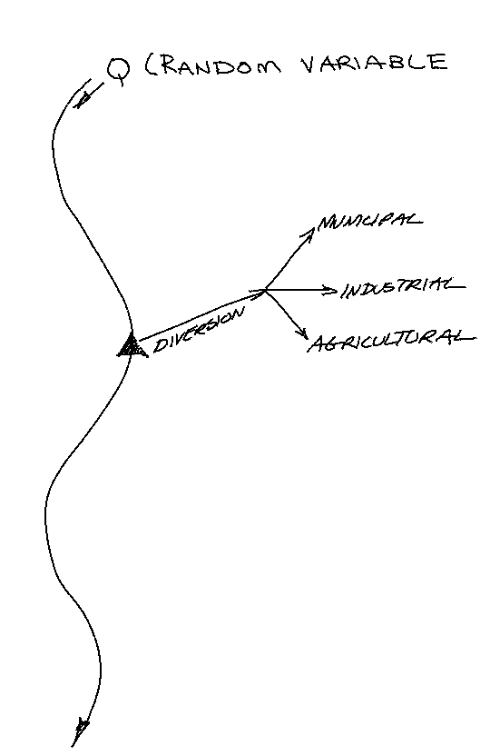
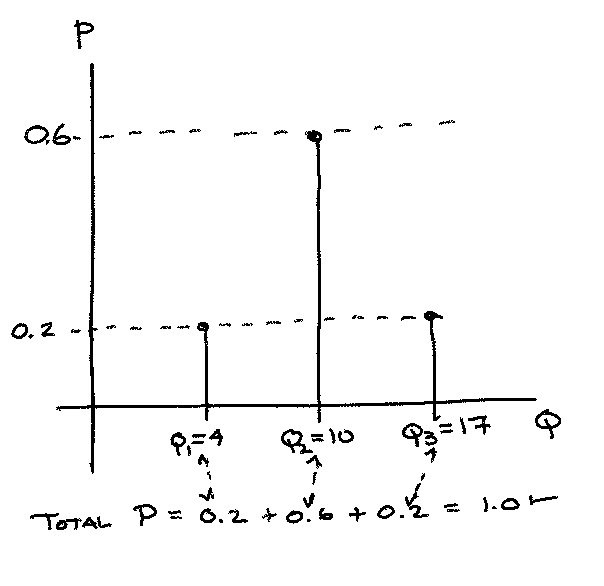
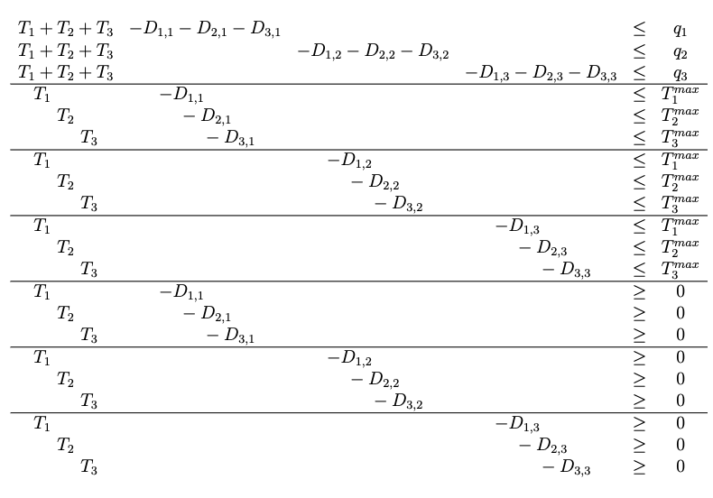
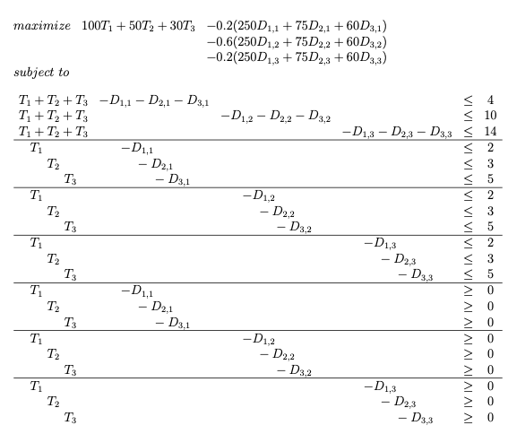

Water Supply Allocation under Uncertainty¶
Introduction of uncertainty into an allocation problem creates a stochastic programming situation. There are a variety of methods to address stochastic programming, the next two examples illustrate a case where the problem is linear enough for a linear programming solution. Using LP for stochastic problems results in a large increase in the number of variables and constraints to account for alternative scenarios or in the use of chance constraints. These two approaches are explored in this chapter and the next – in this chapter we will examine two-stage linear programming by means of a simple example. The example will be repeated in the next chapter using a concept called “chance constraints”.
A water master for a region can divert water from an unregulated stream to three consumers: a municipality, an industrial concern, and an agricultural concern. A schematic of the system is shown in the sketch below:

The industrial and agricultural concern are expanding and would like to know how much water they can expect. If the water supply is insufficient, the expansion plans will be curtailed.
The unregulated streamflow is a random variable, and the goal of the water master is to maximize benefit to the water supply authority. Let \(T_i\) represent the contracted quantity of water the supplier will deliver to each user \(i\) (there are three in this example). If the water is delivered, the resulting net benefits to the local economy are estimated to be \(NB_i\). However, if the water is not delivered, water must be obtained from an alternate source, or demand must be curtailed by rationing of the municipal users, reduced production by industrial users, or reduced irrigation by the agricultural users. Such deficits reduce the net benefits to user \(i\) by a cost \(C_i\) per unit of water not supplied. Each user can provide the water master with an estimate of the maximum amount of water they can use, \(T_{max}\).
\(Q\), the total water available, is a random variable described by some probability distribution. The water master’s goal is to maximize the expected net benefit to the region by allocating water to the three users.
Linear Programming Model Framework¶
Let the deficit for a delivery be denoted by the variable \(D_{i,j}\) , where the \(i\) subscript refers to a particular user, and the \(j\) subscript refers to the particular random supply scenario. The water masters allocation problem is then to maximize expected benefit. Recall an expected cost (or benefit) is the product of the probability of an outcome and the value (cost) of the outcome. In this example the benefits of the deliveries is assured (probability = 1), but the costs of the deficits are stochastic, hence the benefit function is:
The constraints that are imposed are:
Approximating the Random Variable¶
To approximate the value of the expectation, we can approximate the distribution of Q with a discrete distribution as in the sketch below. For a continuous distribution, some kind of discretization will be required to keep the LP manageable.

We can obtain such an approximation by analysing the supply streamflow and use the flow-duration curve to postulate probability mass values for different flow rates (annualized or at least seasonalized).
The approximation allows the estimation of the expected cost (of failed delivery) to be manifest in the objective function, and the supply availability in the constraint set. The model in this instance (3 customers, 3 possible supply rates) has a total of 12 decision variables; the three contracted deliveries and nine deficits (from the 3 possible supply rates).
The cost function becomes: $\( NB = NB_{1} \cdot T_{1} + NB_{2} \cdot T_{2} + NB_{3} \cdot T_{3} ~~~~~ \\ - p_1(C_{1} \cdot D_{1,q_1} + C_{2} \cdot D_{2,q_1} + C_{3} \cdot D_{3,q_1}) \\ -p_2(C_{1} \cdot D_{1,q_2} + C_{2} \cdot D_{2,q_2} + C_{3} \cdot D_{3,q_2}) \\- p_3(C_{1} \cdot D_{1,q_3} + C_{2} \cdot D_{2,q_3} + C_{3} \cdot D_{3,q_3})\)$ The constraint set becomes:

The solution to this LP model would provide the water master with the optimal allocation of contracted (promised delivery) as well as an estimate (implicit in the solution) of the resource allocations to make when supply is insufficient.
Note
The deliveries are actually fixed, the deficits are dependent on the flow state, if the expected failures are too large (too likely) we would want to renegotiate the contracts.
Technological and Probability Values¶
Assume for this example that the table below contains the unit benefits and unit penalty costs for the three uses and the maximum value that each user can assimilate.
User |
Index \(i\) |
$\(NB_i\)$ |
\(C_i\) |
$\(T_i^{max}\)$ |
|---|---|---|---|---|
Municipal |
1 |
2 |
100 |
250 |
Industrial |
2 |
3 |
50 |
75 |
Agricultural |
3 |
5 |
30 |
60 |
The streamflow flow-state distribution for the region (inferred from a flow duration curve) is.
Flow State \(j\) |
Value \(q_j\) |
Probability \(p_j\) |
|---|---|---|
1 |
4 |
0.20 |
2 |
10 |
0.60 |
3 |
17 |
0.20 |
The values in these two tables are inserted into their representative locations in the linear program structure (cost function and constraint set). Once these values are supplied, then we have the necessary set-up for a Linear Program and can apply our tools to its solution. So the linear program to be solved is depicted below

Linear Programming Model Solution¶
To solve the LP we need to translate the framework into a structure for our solver tool to process. The process to solve the problem is to build the cost function weights, then the constraint matrix coefficients, then the right hand side, and finally the sense of the constraints. Once these are built, the objects can be sent to the program for a solution. For this example, the cost function unit values are hand-entered and the probabilities are stored in a separate vector. The coefficient for the cost function is created by element-by-element multiplication of the two vectors. The result is what will be sent to the LP solver algorithm. The coefficient matrix is constructed row-wise, again by hand. The right-hand-side matrix is also hand constructed. The sense of the inequalities is constructed semi- automatically by taking advantage of how the tableau is structured. Finally all the elements are sent to the algorithm as shown in Listing 18 builds and solves the example problem.
import numpy
NB1=100.0
NB2=50.0
NB3=30.0
C1=250.0
C2=75.0
C3=60.0
p1=0.20
p2=0.60
p3=0.20
q1=4.0
q2=10.0
q3=17.0
# build a cost coefficient vector
cost = [NB1,NB2,NB3,-C1,-C2,-C3,-C1,-C2,-C3,-C1,-C2,-C3] #cost coefficient vector
prob = [1 ,1 ,1 ,0.2 ,0.2 ,0.2 ,0.6 ,0.6 ,0.6 ,0.2 ,0.2 ,0.2] #probability mass vector - the ones are for the Target deliveries
prices = numpy.array(cost)*numpy.array(prob) # this is our cost coefficient vector
# build the constraint set
# Build the constraint RHS vector (SciPy uses less-than for inequality)
#
# constraint matrix
constraint = numpy.array([[0 for irow in range(12)] for jcol in range(21)]) ;
# manual build by row
constraint [0][:] = [1 ,1 ,1 , -1 , -1 , -1 ,0 ,0 ,0 ,0 ,0 ,0]
constraint [1][:] = [1 ,1 ,1 ,0 ,0 ,0 , -1 , -1 , -1 ,0 ,0 ,0]
constraint [2][:] = [1 ,1 ,1 ,0 ,0 ,0 ,0 ,0 ,0 , -1 , -1 , -1]
constraint [3][:] = [1 ,0 ,0 , -1 ,0 ,0 ,0 ,0 ,0 ,0 ,0 ,0]
constraint [4][:] = [0 ,1 ,0 ,0 , -1 ,0 ,0 ,0 ,0 ,0 ,0 ,0]
constraint [5][:] = [0 ,0 ,1 ,0 ,0 , -1 ,0 ,0 ,0 ,0 ,0 ,0]
constraint [6][:] = [1 ,0 ,0 ,0 ,0 ,0 , -1 ,0 ,0 ,0 ,0 ,0]
constraint [7][:] = [0 ,1 ,0 ,0 ,0 ,0 ,0 , -1 ,0 ,0 ,0 ,0]
constraint [8][:] = [0 ,0 ,1 ,0 ,0 ,0 ,0 ,0 , -1 ,0 ,0 ,0]
constraint [9][:] = [1 ,0 ,0 ,0 ,0 ,0 ,0 ,0 ,0 , -1 ,0 ,0]
constraint [10][:] = [0 ,1 ,0 ,0 ,0 ,0 ,0 ,0 ,0 ,0 , -1 ,0]
constraint [11][:] = [0 ,0 ,1 ,0 ,0 ,0 ,0 ,0 ,0 ,0 ,0 , -1]
constraint [12][:] = [1 ,0 ,0 , -1 ,0 ,0 ,0 ,0 ,0 ,0 ,0 ,0]
constraint [13][:] = [0 ,1 ,0 ,0 , -1 ,0 ,0 ,0 ,0 ,0 ,0 ,0]
constraint [14][:] = [0 ,0 ,1 ,0 ,0 , -1 ,0 ,0 ,0 ,0 ,0 ,0]
constraint [15][:] = [1 ,0 ,0 ,0 ,0 ,0 ,-1 ,0 ,0 ,0 ,0 ,0]
constraint [16][:] = [0 ,1 ,0 ,0 ,0 ,0 ,0 , -1 ,0 ,0 ,0 ,0]
constraint [17][:] = [0 ,0 ,1 ,0 ,0 ,0 ,0 ,0 , -1 ,0 ,0 ,0]
constraint [18][:] = [1 ,0 ,0 ,0 ,0 ,0 ,0 ,0 ,0 , -1 ,0 ,0]
constraint [19][:] = [0 ,1 ,0 ,0 ,0 ,0 ,0 ,0 ,0 ,0 , -1 ,0]
constraint [20][:] = [0 ,0 ,1 ,0 ,0 ,0 ,0 ,0 ,0 ,0 ,0 , -1]
rhs = [4 ,10 ,14 ,2 ,3 ,5 ,2 ,3 ,5 ,2 ,3 ,5 ,0 ,0 ,0 ,0 ,0 ,0 ,0 ,0 ,0]
# Change sense of greater-than constraints, so change sign
for irow in range(12,21):
rhs[irow]=-1.0*rhs[irow]
for jcol in range(12):
constraint[irow][jcol]=-1.0*constraint[irow][jcol]
# Change sense of prices (solver minimizes only)
for jcol in range(12):
prices[jcol]=-1.0*prices[jcol]
from scipy.optimize import linprog # load the package
myoptions=dict({"maxiter":1000,"tol": 1e-9,"autoscale":False})
#myoptions
#prices
constraint
array([[ 1, 1, 1, -1, -1, -1, 0, 0, 0, 0, 0, 0],
[ 1, 1, 1, 0, 0, 0, -1, -1, -1, 0, 0, 0],
[ 1, 1, 1, 0, 0, 0, 0, 0, 0, -1, -1, -1],
[ 1, 0, 0, -1, 0, 0, 0, 0, 0, 0, 0, 0],
[ 0, 1, 0, 0, -1, 0, 0, 0, 0, 0, 0, 0],
[ 0, 0, 1, 0, 0, -1, 0, 0, 0, 0, 0, 0],
[ 1, 0, 0, 0, 0, 0, -1, 0, 0, 0, 0, 0],
[ 0, 1, 0, 0, 0, 0, 0, -1, 0, 0, 0, 0],
[ 0, 0, 1, 0, 0, 0, 0, 0, -1, 0, 0, 0],
[ 1, 0, 0, 0, 0, 0, 0, 0, 0, -1, 0, 0],
[ 0, 1, 0, 0, 0, 0, 0, 0, 0, 0, -1, 0],
[ 0, 0, 1, 0, 0, 0, 0, 0, 0, 0, 0, -1],
[-1, 0, 0, 1, 0, 0, 0, 0, 0, 0, 0, 0],
[ 0, -1, 0, 0, 1, 0, 0, 0, 0, 0, 0, 0],
[ 0, 0, -1, 0, 0, 1, 0, 0, 0, 0, 0, 0],
[-1, 0, 0, 0, 0, 0, 1, 0, 0, 0, 0, 0],
[ 0, -1, 0, 0, 0, 0, 0, 1, 0, 0, 0, 0],
[ 0, 0, -1, 0, 0, 0, 0, 0, 1, 0, 0, 0],
[-1, 0, 0, 0, 0, 0, 0, 0, 0, 1, 0, 0],
[ 0, -1, 0, 0, 0, 0, 0, 0, 0, 0, 1, 0],
[ 0, 0, -1, 0, 0, 0, 0, 0, 0, 0, 0, 1]])
bnd = [(0, 20) for i in range(12)] # set bounds 0-infnty
opt = linprog(c=prices, A_ub=constraint, b_ub=rhs, bounds=bnd, method="interior-point",options=myoptions)
#opt
# check for solution
if opt.status == 0:
print('Optimal Solution Found')
print('Cost : ',-1.0*round(opt.fun,2))
sum = 0.0
irow=0
for i in range(3):
print('Target Delivery',irow+1,' = ',round(opt.x[i],3))
irow=irow+1
print("Streamflow State 1")
irow=0
for i in range(3,6):
print('Defecit Delivery',irow+1,' = ',round(opt.x[i],3))
irow=irow+1
print("Streamflow State 2")
irow=0
for i in range(6,9):
print('Defecit Delivery',irow+1,' = ',round(opt.x[i],3))
irow=irow+1
print("Streamflow State 3")
irow=0
for i in range(9,12):
print('Defecit Delivery',irow+1,' = ',round(opt.x[i],3))
irow=irow+1
Optimal Solution Found
Cost : 425.0
Target Delivery 1 = 2.0
Target Delivery 2 = 3.0
Target Delivery 3 = 5.0
Streamflow State 1
Defecit Delivery 1 = 0.0
Defecit Delivery 2 = 1.0
Defecit Delivery 3 = 5.0
Streamflow State 2
Defecit Delivery 1 = 0.0
Defecit Delivery 2 = 0.0
Defecit Delivery 3 = 0.0
Streamflow State 3
Defecit Delivery 1 = 0.0
Defecit Delivery 2 = 0.0
Defecit Delivery 3 = 0.0
Once the script run, the output then needs to be interpreted - in the example above, the output is parsed using scripting and our knowledge of the problem structure.
The optimal solution is to contract deliveries to each user at the full amount they request. The expected net benefit is 425 benefit units. There is a 20% chance that users 2 and 3 will have deficits and the water master will incur costs. There is an 80% chance that all users will get their contracted water, and a 20% chance that there will be excess water available. If the system had storage the 20% excess cases could be used to help satisfy the one case when the system does not have enough input.
Note
Hmmm have just justified dam building!
A useful collateral result is that when the water input is too small to satisfy all the contracts, the solution also suggests how to make the allocations in the limited case – the municipal users are supplied their full amount, industry receives the remainder of the available water (and incurs a deficit of 1 unit), and agriculture is denied its entire request. The allocations would change if the unit benefits reflected the value of the water differently to the three users and/or the deficit costs changed.
Exercises¶
Determine the required penalty to ensure at least 1 unit of water is delivered to the agricultural sector Interpret the results of your solution.
Suppose there is a fourth user, the in-stream requirement to ensure health of the stream itself. If the in-stream requirement is 1 flow unit, how does the allocation change for the original problem and for the cost-incentivized agricultural adjustment? Document the new LP to accommodate the 4th user.
Note
The objective function is cast in a penalty-function structure, and can be used to determine costs to assign to produce economically influenced results.